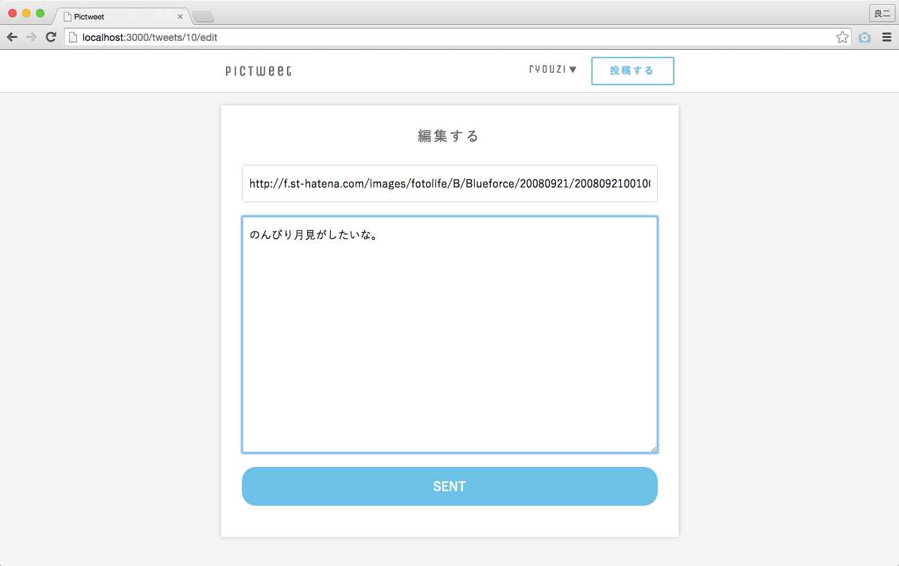

- 終了まであと10日
 大宅 誠人
大宅 誠人
大宅 誠人現在、ツイートはどのユーザーが投稿したものなのかわからない状態になっています。これがわかるようになると、特定のユーザーがつぶやいたツイート一覧を取得できたり、ツイートの削除を行う際につぶやいた本人しか削除できないように設定できたりと色々便利です。そこで、本項ではツイートにユーザーの情報を追加して、誰が投稿したツイートなのかが分かるようにします。
ツイートにユーザーの情報を追加する場合、tweetsテーブルに新しくuser_idというカラムを作成し、そこにツイートを投稿したユーザーのidを入れます。カラムの追加の手順はnicknameカラムを追加した際と同様です。
1 2 3 4 5 |
$ rails g migration AddUserIdToTweets user_id:integer
# tweetsテーブルにuser_idカラムをinteger型で追加するマイグレーションファイルの作成
$ rake db:migrate
# マイグレーションファイルの実行
|
上記の作業でtweetsテーブルにカラムが追加されました。そこで今回はツイートの保存時に投稿したユーザーのidをテーブルに保存する処理を記述します。
deviseでログイン機能を実装すると、current_userというヘルパーメソッドを使用することができます。これは、現在ログイン中のユーザーのレコードを、userクラスのインスタンスとして取得することができるメソッドです。
例えば、user_idが1のアカウントでログインしている場合、current_userはUser.find(1)と同じ意味を持ちます。この時、current_user.usersテーブルのカラム名とすることで、ログイン中のユーザーの情報として登録されている各カラムの値を取得することができます。
ツイートを投稿したユーザーとはつまり現在ログインしているユーザーのことです。なので、tweetsテーブルのuser_idカラムに保存すべきなのはcurrent_userのidカラムの値です。
実際にツイートをテーブルに保存する処理が書かれているのはtweets_controllerのcreateアクションです。現在は、以下のようになっています。
1 2 3 4 5 6 7 8 9 10 11 12 13 14 15 16 17 18 19 20 21 22 23 24 |
class TweetsController < ApplicationController
before_action :move_to_index, except: :index
def index
@tweets = Tweet.page(params[:page]).per(5).order("created_at DESC")
end
def new
end
def create
Tweet.create(tweet_params)
end
private
def tweet_params
params.permit(:name, :image, :text)
end
def move_to_index
redirect_to action: "index" unless user_signed_in?
end
end
|
ツイートを保存する際、name、image、textというビューから送られてくる情報に加えて、user_idカラムにログイン中のユーザーのidを保存しなければいけません。そこで、createメソッドの引数をcreate(カラム名: 保存する値, カラム名: 保存する値, …)と変更する必要があります。この時、name、image、textを保存する際にはtweet_paramsというストロングパラメーターを使用しましょう。tweet_paramsはハッシュの形なので、tweet_params[:キーの名前]とすることでそのキーのバリューの値を取ることができます。すると、以下のように書くことができます。
1 2 3 4 5 6 7 8 9 10 11 12 13 14 15 16 17 18 19 20 21 22 23 24 |
class TweetsController < ApplicationController
before_action :move_to_index, except: :index
def index
@tweets = Tweet.page(params[:page]).per(5).order("created_at DESC")
end
def new
end
def create
Tweet.create(name: tweet_params[:name], image: tweet_params[:image], text: tweet_params[:text])
end
private
def tweet_params
params.permit(:name, :image, :text)
end
def move_to_index
redirect_to action: :index unless user_signed_in?
end
end
|
加えて、user_idに現在ログイン中のユーザーのidを保存する処理を追記しましょう。
投稿したユーザーのidをテーブルに保存する処理を記述できたら、実際にそれがうまく機能するか確かめましょう。実際にツイートを投稿し、Sequel Proに保存されたレコードを確認しましょう。user_idに現在ログイン中のユーザーのidが保存されていれば成功です。
現在、ツイートの一覧画面には全ユーザーのツイートが表示されています。そこで、一覧画面とは別に、現在ログイン中のユーザーの投稿のみが表示されているマイページを作成します。
新しくページを作成する場合、まずはルーティングを設定します。マイページへのパスは、usersテーブルでのidが1のユーザーでは/users/1、idが99のユーザーでは/users/99となるようにルーティングを設定します。
マイページのパスは他のページと違って、ユーザーごとにパスが異なります。その場合、通常とは多少異なるルーティングの記述方法を使います。
マイページを表示する際にはusersコントローラーのshowアクションを動かします。showアクションへのルーティングは、以下のように書きます。
1 2 3 |
Rails.application.routes.draw do
get '/コントローラー名/:id' => 'コントローラー名#show'
end
|
:idの部分には表示するユーザーページのユーザーのidが入ります。
1 2 3 4 5 6 7 8 |
Rails.application.routes.draw do
devise_for :users
root 'tweets#index'
get 'tweets' => 'tweets#index'
get 'tweets/new' => 'tweets#new'
post 'tweets' => 'tweets#create'
get 'users/:id' => 'users#show' #Mypageへのルーティング
end
|
このようにルーティングを定義することによって、パスの一部をコントローラーにパラメーターというハッシュ形式で値を送る事が出来ます。これはparamsというメソッドを使用することで取得することが出来ます。コントローラー内でparams[:id]と記述することにすれば/users/:idの:id部分の情報を使用することができます。後ほどparamsの中身を見ていきます。
先ほど、マイページを表示するためにusersコントローラーのshowアクションを動かすルーティングを設定しました。続いてusersコントローラーを作成し、showアクションを定義していきます。
whereメソッドはActiveRecordメソッドのうちの一つです。モデル.where(条件)のように引数部分に条件を指定することで、テーブル内の条件に一致したレコードのインスタンスを配列型で取得できます。
また、whereメソッドを連続して記述することによって、複数の条件に一致したレコードを取得することもできます。
1 2 3 4 5 6 7 |
[1] pry(main)> Tweet.where('id < 3')
=> [＃<Tweet id: 1, image: "test1.jpg", text: "いい景色だ。", created_at: "2014-12-06 00:00:00", updated_at: "2014-12-06 00:00:00", user_id: 1>,＃<Tweet id: 2, image: "test2.jpg", text: "Thank you!", created_at: "2014-12-07 00:00:00", updated_at: "2014-12-07 00:00:00", user_id: 2>]
# idが3未満のtweetsテーブルのインスタンスを配列で取得
[2] pry(main)> Tweet.where('id < 3').where(user_id: 1)
=> [＃<Tweet id: 1, image: "test1.jpg", text: "いい景色だ。", created_at: "2014-12-06 00:00:00", updated_at: "2014-12-06 00:00:00", user_id: 1>]
# idが3未満かつuser_idが1のtweetsテーブルのインスタンスを配列で取得
|
1 2 |
$ rails g controller users
# users_controllerと関連するファイルを作成
|
続いて、作成したusers_controllerにshowアクションを定義します。showアクションで表示するのはユーザーのマイページですが、マイページに必要な情報はニックネームとログイン中のユーザーのツイートの2つです。そこで、showアクションにはユーザーページを表示する際に必要な情報をビューに受け渡す処理を記述します。
ビューに情報を受け渡す際にはインスタンス変数（@付きの変数）をコントローラーのアクション内で定義します。今回の場合、必要な情報はニックネームとログイン中のユーザーのツイートの2つです。それぞれを@nicknameと@tweetsという変数に定義しましょう。
1 2 3 4 5 6 7 8 |
class UsersController < ApplicationController
def show
@nickname = 現在ログインしているユーザーのニックネーム
@tweets = 現在ログインしているユーザーが投稿したツイート.page(params[:page]).per(5).order("created_at DESC")
end
end
|
usersコントローラーにshowアクションを定義することができたので、アクションに対応するビューファイルを作成していきます。
先ほどusers_controllerを作成した際にapp/views/usersディレクトリが作成されているので、その中にshow.html.erbというファイルを作成してください。
作成したファイルを、以下のように編集しましょう。
1 2 3 4 5 |
<div class="contents row">
<p><%= @nickname %>さんの投稿一覧</p>
<%= render partial: "tweets/tweet", collection: @tweets %>
<%= paginate(@tweets) %>
</div>
|
マイページへはPicTweetのページ上部から遷移出来るように実装します。
本項の1.マイページのルーティングを記述するで実装した通り、マイページへのパスは/users/ログイン中のユーザーのidです。こちらをどう記述するかが鍵になります。
1 2 3 4 5 6 7 8 9 10 11 12 13 14 15 16 17 18 19 20 21 22 23 24 25 |
<header class="header">
<div class="header__bar row">
<h1 class="grid-6"><a href="/">PicTweet</a></h1>
<% if user_signed_in? %>
<div class="user_nav grid-6">
<span>ログイン中のユーザーのニックネームを記述
<ul class="user__info">
<li>
<a href="/users/ログイン中のユーザーのid">マイページ</a>
<%= link_to "ログアウト", destroy_user_session_path, method: :delete %>
</li>
</ul>
</span>
<a class="post" href="/tweets/new">投稿する</a>
</div>
<% else %>
<div class="grid-6">
<%= link_to "ログイン", new_user_session_path, class: 'post' %>
<%= link_to "新規登録", new_user_registration_path, class: 'post' %>
</div>
<% end %>
</div>
</header>
|
最後にルーティングを設定したところで一度触れたパラメーターについて見ていきます。paramsの中を確認するにはbinding.pryを使用します。
1 2 3 4 5 6 7 |
class UsersController < ApplicationController
def show
binding.pry
@nickname = current_user.nickname
@tweets = current_user.tweets.page(params[:page]).per(5).order('created_at desc')
end
end
|
編集したら、http://localhost:3000/users/ログインしているユーザーのid にアクセスします。
するとサーバーが停止するので、ターミナルを確認します。
1 2 3 4 5 |
2: def show
=> 3: binding.pry
4: @nickname = current_user.nickname
5: @tweets = current_user.tweets.page(params[:page]).per(5).order('created_at desc')
6: end
|
この状態で、paramsと入力します。
1 2 |
[1] pry(#<UsersController>)> params
=> {"controller"=>"users", "action"=>"show", "id"=>"1"}
|
paramsというハッシュの中に"id" => "1"というルーティングで設定したキーとビューでパスに組み込まれたユーザーのidが追加されているのが確認できます。このparamsがコントローラーに送られてくるのでコントローラー内でparams[:id]とすることでユーザーのidを取得することが出来ます。また、ルーティングで:idを:user_idのように変更すると、以下のようにキーがuser_idになります。
1 2 |
[1] pry(#<UsersController>)> params
=> {"controller"=>"users", "action"=>"show", "user_id"=>"1"}
|
users_controller.rbに記述したbinding.pryを削除しましょう
Railsにはモデル間の関連付けを管理するアソシエーションという機能があります。今回の作業ではこのアソシエーションという機能を実装します。
アソシエーションとはモデル間の関連付けを管理する機能のことで、定義しておくことでモデルをまたいだデータの呼び出しをより簡単に行なうことができるようになります。今回の場合、UserモデルとTweetモデルをアソシエーションで関連付けします。下のヒントを参考にしながら実装を行ないましょう。
アソシエーションを利用するために、まずはモデル間の関係を定義しましょう。アソシエーションを利用するには以下の2つの条件を満たす必要があります。
has_manyやbelongs_toなどの定義がされている所属するクラス名_idというカラムがある②の実装に関してはLevel7で行なった(user_idというカラムをtweetsテーブルに追加した)ので、これから①の実装に関しての説明を行ないます。
現在PicTweetにはサインアップという機能があり、利用者がユーザーを作成してログインを行なうことが出来ます。また、ツイートの投稿に関してはログインしたユーザーのみが行なうことが出来ます。
つまり、全てのツイートはいずれかのユーザーが作成したものであり、逆に言えばユーザーは自分の作成したツイートを複数個所持している状態といえます。
Userモデルの視点で考えると、あるuserの作成したtweetが複数個ある状態と言えます。この状態のことをhas manyの関係といい、今回の場合には「User has many Tweets」の状態であると言えます。
この関係をアソシエーションで定義するためにはUserモデルのモデルファイルを編集します。「User has many Tweets」の状態を定義するので、Userモデルのモデルファイルにhas_many :tweetsと追記します。
1 2 3 4 5 |
class User < ActiveRecord::Base
devise :database_authenticatable, :registerable,
:recoverable, :rememberable, :trackable, :validatable
has_many :tweets
end
|
また、Tweetモデルの視点で考えると、全てのtweetはいずれかのuserに属している状態と言えます。この状態のことをbelongs toの関係といい、今回の場合は「Tweet belongs to User」の状態であると言えます。
この関係をアソシエーションで定義するためにはTweetモデルのモデルファイルを編集します。「Tweet belongs to User」の関係を定義するので、Tweetモデルのモデルファイルにbelongs_to :userと追記します。
1 2 3 |
class Tweet < ActiveRecord::Base
belongs_to :user
end
|
以上の作業でアソシエーションを定義することができました。そこで、実際にアソシエーションを利用して実装を行なっていきます。さきほど編集を行なったusers_controller.rbのshowアクション部分でのデータの呼び出しにアソシエーションを使用して記述を行ないます。
アソシエーションを定義すると、モデルをまたいだデータの呼び出しをより直感的に行なうことが出来ます。便利さを実感してもらうために、アソシエーションを使用しない場合とする場合のコードの違いを見てみましょう。
アソシエーションを使用しない場合は、以下のように現在ログイン中のユーザーが投稿したツイートを取得します。
例としてコンソールからのデータの呼び出しを行ないます。
1 2 3 4 5 |
$ rails c
[1] pry(main)> user = User.find(1)
[2] pry(main)> Tweet.where(user_id: user.id)
=> [#<Tweet id: 1, image: "http://photo1.jpg", text: "いい景色だ。", created_at: "2014-12-06 09:00:00", updated_at: "2014-12-06 09:00:00", user_id: 1>,
#<Tweet id: 1, image: "http://photo2.jpg", text: "楽しい思い出は消えない。", created_at: "2014-12-06 10:00:00", updated_at: "2014-12-06 10:00:00", user_id: 1>]
|
tweetsテーブルに対して、user_idがuserのidと等しいレコードを取得しています。
対して、これと同じことをアソシエーションを利用すると以下のように記述出来ます。
1 2 3 4 5 |
$ rails c
[1] pry(main)> user = User.find(1)
[2] pry(main)> user.tweets
=> [#<Tweet id: 1, image: "http://photo1.jpg", text: "いい景色だ。", created_at: "2014-12-06 09:00:00", updated_at: "2014-12-06 09:00:00", user_id: 1>,
#<Tweet id: 1, image: "http://photo2.jpg", text: "楽しい思い出は消えない。", created_at: "2014-12-06 10:00:00", updated_at: "2014-12-06 10:00:00", user_id: 1>]
|
Userモデルに「User has many Tweets」の状態のアソシエーションを定義したので、Userモデルのインスタンス.tweetsと記述するだけでそのインスタンスが所持しているツイートを取得することができます。
早速、users_controllerのshowアクション内を編集してアソシエーションを利用してみましょう。
1 2 3 4 5 6 |
class UsersController < ApplicationController
def show
@nickname = current_user.nickname
@tweets = アソシエーションを使用して記述.page(params[:page]).per(5).order("created_at DESC")
end
end
|
現在、ツイートの一覧画面のツイートの右下には、投稿時に入力した「name」が表示されています。その部分の表示を投稿者の「nickname」を表示するように実装しましょう。
ツイートの右下、tweetsテーブルのレコードの「name」カラムの値が表示されている部分に、ツイートの投稿者の「nickname」が表示されるようにビューの変更を行なっていきます。「nickname」を表示する際にはアソシエーションを利用します。
Tweetモデルに対して「Tweet belongs to User」という形でアソシエーションを定義しているので、Tweetモデルのインスタンス.userと記述するだけでそのインスタンスが属しているUserモデルのインスタンスを取得することができます。
またコンソールを利用して例を見てみましょう。
1 2 3 4 |
$ rails c
[1] pry(main)> tweet = Tweet.find(1)
[2] pry(main)> User.find(tweet.user_id)
=> #<;User id: 1, email: "test@gmail.com", encrypted_password: "@@@@@@@@@@@@@@@@@", reset_password_token: nil, reset_password_sent_at: nil, remember_created_at: nil, sign_in_count: 1, current_sign_in_at: "2014-12-06 09:00:00", last_sign_in_at: "2014-12-06 09:00:00", current_sign_in_ip: "127.0.0.1", last_sign_in_ip: "127.0.0.1", created_at: "2014-12-06 09:00:00", updated_at: "2014-12-06 09:00:00", nickname: "test_ruby">
|
usersテーブルに対して、idがtweetのuser_idと等しいレコードを取得しています。これと同じことをアソシエーションを利用すると以下のように記述出来ます。
1 2 3 4 |
$ rails c
[1] pry(main)> tweet = Tweet.find(1)
[2] pry(main)> tweet.user
=> #<User id: 1, email: "test@gmail.com", encrypted_password: "@@@@@@@@@@@@@@@@@", reset_password_token: nil, reset_password_sent_at: nil, remember_created_at: nil, sign_in_count: 1, current_sign_in_at: "2014-12-06 09:00:00", last_sign_in_at: "2014-12-06 09:00:00", current_sign_in_ip: "127.0.0.1", last_sign_in_ip: "127.0.0.1", created_at: "2014-12-06 09:00:00", updated_at: "2014-12-06 09:00:00", nickname: "test_ruby">
|
早速実装してみましょう。
1 2 3 4 5 6 7 8 9 10 |
<div class="content_post" style="background-image: url(<%= tweet.image %>);">
<p>
<%= br(tweet.text) %>
</p>
<span class="name">
<a href="">
<span>投稿者</span><%= tweet.user.nickname %>
</a>
</span>
</div>
|
ビューを確認する前に、以下の注意事項を読んでください。
Sequel Pro上で、tweetsテーブルにあるレコードのうちuser_idカラムが空のものに、現在存在しているusersテーブルのレコードのidを入力してください。
Level7で、tweetを投稿した際にuser_idも一緒に保存するようにしましたが、Sequel Proで確認すればわかる通り、それ以前に投稿したtweetはuser_idがnullのままになっているはずです。この時tweet.userはnilとなるため、tweet.user.nicknameと書くと、nullクラスに対してnicknameメソッドが実行されてしまいエラーとなります。
nicknameが表示されているか確認しましょう
localhost:3000にアクセスして、投稿一覧にnickname
が表示されているか確認しましょう。
上記の実装でツイートの一覧画面に投稿者の「nickname」が表示されるようになりました。しかし、ツイートからユーザーの情報を呼び出す際に「n+1問題」という問題が発生しています。そこで、今回はこの問題を解決するためにユーザー情報を先読みするように実装していきます。
モデルを利用してデータベースの情報にアクセスする際にはSQLが発行されます。SQLが発行されるたびにデータベースに対して通信が走るので、SQLが大量に発行されれば処理が重くなります。n+1問題とは、データを呼び出す際に大量のSQLが発行されてしまう問題のことです。
今回の場合、indexアクションで全ツイートを取得する1回に加えて、部分テンプレートである_tweet.html.erbでアソシエーションを利用してツイートの数だけユーザー情報を呼び出しています。つまり、現在の状態だとツイート数＋1回SQLが発行されています。この状態のことをn+1問題と言います。
includesメソッドはn+1問題を解消することができます。指定された関連モデルをまとめて取得することで、SQLの発行回数を減らすことができます。書き方は、includes(:モデル名)とします。引数で、関連モデルをシンボル型(接頭に:がつく型)で指定します。
今回、usersテーブルとtweetsテーブルの間には以下の図のような関係があります。tweetsテーブルのレコードは必ず1つのusersテーブルのレコードに属しているので、includesメソッドを利用することでtweetsテーブルのレコードを取得する段階で関連するusersテーブルのレコードも一度に取得することができます。
1 2 3 4 5 6 7 8 9 |
class TweetsController < ApplicationController
def index
@tweets = Tweet.includes(:user).page(params[:page]).per(5).order("created_at DESC")
end
#以下省略
end
|
ツイートを表示する際にアソシエーションを利用して投稿者のニックネームが表示されるようになったので、投稿時に「name」を入力する必要がなくなりました。そこで、この実装に合わせたビューの変更を行ないます。投稿時に「name」を入力する必要がなくなったので、「name」の入力フォームを削除します。
1 2 3 4 5 6 7 8 9 10 |
<div class="contents row">
<%= form_tag('/tweets', method: :post) do %>
<h3>
投稿する
</h3>
<input placeholder="Image URL" type="text" name="image" autofocus="true">
<textarea placeholder="text" name="text" cols="30" rows="10"></textarea>
<input type="submit" value="SENT">
<% end %>
</div>
|
投稿時に「name」を入力する必要がなくなったので、それに合わせてtweetsコントローラーでの処理も変更しましょう。nameカラムを使用しないので、ツイートの保存時にnameカラムに情報を保存しないように変更を行ないます。
1 2 3 4 5 6 7 8 9 10 11 12 13 14 15 16 17 18 19 20 21 22 23 24 |
class TweetsController < ApplicationController
before_action :move_to_index, except: :index
def index
@tweets = Tweet.includes(:user).page(params[:page]).per(5).order("created_at DESC")
end
def new
end
def create
Tweet.create(image: tweet_params[:image], text: tweet_params[:text], user_id: current_user.id)
end
private
def tweet_params
params.permit(:image, :text)
end
def move_to_index
redirect_to action: :index unless user_signed_in?
end
end
|
ツイートに「name」という情報を保存しなくなったので「name」カラムが不要になりました。
そこで、テーブルからカラムを削除するためのマイグレーションファイルを作成して、カラムの削除を実行しましょう。そのためには、以下のようにコマンドを実行します。
1 |
$ rails g migration Removeカラム名From削除元テーブル名 削除するカラム名:型
|
今回は、tweetsテーブルからstring型のnameというカラムを削除します。
1 2 3 4 5 |
$ rails g migration RemoveNameFromTweets name:string
# マイグレーションファイルの作成
$ rake db:migrate
# マイグレーションの実行
|
Removeカラム名From削除元テーブル名のカラム名の部分は、Addカラムの際と同様に必ずしも厳密なカラム名を入力する必要はありません。今回はnameというカラムのみを削除するので、Nameと記述しましょう。対して、削除元テーブル名は正確に記述する必要があります。
現在の実装では一度投稿したツイートは削除することができません。そこで、ツイートに削除ボタンを追加して、ツイートの削除を行えるようにしましょう。ツイートを削除する流れは、下記の図のような流れで実行されます。

作業手順はルーティングを設定することでビューに削除のパスを指定できるため、ルーティングの編集から始まります。
ツイート削除機能を実装するためにまずはルーティングを定義していきます。ツイートを削除する際にはツイートごとに固有のパスが発行されるので、ユーザーのマイページを作成したときと同様に少し特別なルーティングが必要になります。
また、ツイートの削除を行なう際にはdeleteというHTTPメソッドを利用します。
HTTPリクエストにはいくつかの種類があり、これまでにgetメソッドとpostメソッドを学習しました。
deleteメソッドは情報の削除を行なう際に利用するHTTPメソッドです。今回の場合、ツイートの削除を行なうのでdeleteメソッドを利用します。また、
ツイートの削除を行なう際には、tweetsコントローラーのdestroyアクションを動かします。
1 2 3 4 5 6 7 8 9 |
Rails.application.routes.draw do
devise_for :users
root 'tweets#index'
get 'tweets' => 'tweets#index'
get 'tweets/new' => 'tweets#new'
post 'tweets' => 'tweets#create'
delete 'tweets/:id' => 'tweets#destroy'
get 'users/:id' => 'users#show'
end
|
リクエストする箇所(ビュー)では、パスの:idの部分に削除するツイートのidが入るように記述します。すると、パラメーターがコントローラーに渡る際paramsのキーにidが追加され、そのバリューはリクエストの際に:idの部分に記述された値になります。つまり、:idの部分に記述された値はコントローラー上でparams[:id]とすることで取得できます。
ツイートを削除するためにビューファイルを編集して削除ボタンを追加します。今回は、link_toメソッドを使用しましょう。削除ボタンはツイートの表示画面の右上に配置されます。また、自分が投稿したツイートにのみ表示されるようにします。
link_toメソッドを実装する際にはrake routesコマンドを使用して、パスを確認する必要があります。
このコマンドは現在定義しているルーティングを表示してくれるコマンドです。ターミナルで入力することで、config/routes.rbに記述したルーティングを表示してくれます。
1 |
$ rake routes
|
1 2 3 4 5 6 7 8 9 10 11 12 13 14 15 16 17 18 19 20 21 22 |
Prefix Verb URI Pattern Controller#Action
new_user_session GET /users/sign_in(.:format) devise/sessions#new
user_session POST /users/sign_in(.:format) devise/sessions#create
destroy_user_session DELETE /users/sign_out(.:format) devise/sessions#destroy
user_password POST /users/password(.:format) devise/passwords#create
new_user_password GET /users/password/new(.:format) devise/passwords#new
edit_user_password GET /users/password/edit(.:format) devise/passwords#edit
PATCH /users/password(.:format) devise/passwords#update
PUT /users/password(.:format) devise/passwords#update
cancel_user_registration GET /users/cancel(.:format) devise/registrations#cancel
user_registration POST /users(.:format) devise/registrations#create
new_user_registration GET /users/sign_up(.:format) devise/registrations#new
edit_user_registration GET /users/edit(.:format) devise/registrations#edit
PATCH /users(.:format) devise/registrations#update
PUT /users(.:format) devise/registrations#update
DELETE /users(.:format) devise/registrations#destroy
root GET / tweets#index
tweets GET /tweets(.:format) tweets#index
POST /tweets(.:format) tweets#create
new_tweet GET /tweets/new(.:format) tweets#new
tweet DELETE /tweets/:id(.:format) tweets#destroy
user GET /users/:id(.:format) users#show
|
rake routesコマンドを実行すると例えば上記のような出力結果が表示されます。（完全に同様の出力結果でなくても構いません。）この出力結果は以下のような意味を持っています。
| 項目名 | 意味 |
|---|---|
| Prefix | 「Prefix」はルーティングの名前を表しています。「Prefix」は設定を行わなくても、自動的に割り当てられますが、自ら設定することもできます。 |
| Verb | 「Verb」はHTTPメソッドを表しています。右側に表示されているパスにどのHTTPメソッドでアクセスするかを示しています。 |
| URI Pattern | 「URI Pattern」はルーティングのパスを表しています。このパスにアクセスされた際に、指定のコントローラーとアクションで処理が行われます。 |
| Controller#Action | 「Controller#Action」は指定したパスにアクセスした際に処理が行われるコントローラーとアクションを表しています。#以前がコントローラー名、#以後がアクション名を示しています。 |
1 2 3 4 5 6 7 8 9 10 11 12 13 14 15 16 17 18 19 20 |
<div class="content_post" style="background-image: url(<%= tweet.image %>);">
<% if ユーザーがログインしているか？ かつ current_user.id == 削除したいツイートを投稿したユーザーのid %>
<div class="more">
<span><%= image_tag 'arrow_top.png' %></span>
<ul class="more_list">
<li>
<%= link_to '削除', "/tweets/削除したいツイートのid", method: :HTTPメソッドを指定 %>
</li>
</ul>
</div>
<% end %>
<p>
<%= br(tweet.text) %>
</p>
<span class="name">
<a href="/users/<%= tweet.user_id %>">
<span>投稿者</span><%= tweet.user.nickname %>
</a>
</span>
</div>
|
ツイートを削除する際にはtweetsコントローラーのdestroyアクションを動かします。そこで、このアクションをコントローラーに定義していきましょう。
ActiveRecordメソッドのうちの一つで、インスタンスに対してそのレコードを削除する際に使うことができます。ターミナルで実行して確認してみましょう。
1 2 3 4 |
$ rails c
[1] pry(main)> tweet = Tweet.find(今あるtweetsテーブルのid)
=> #<Tweet:0x007ff621357720 id: 1, name: "george", text: "いい景色だ", image: "http://photo1.jpg", created_at: Thu, 16 Apr 2015 05:41:20 UTC +00:00, updated_at: Thu, 16 Apr 2015 05:41:20 UTC +00:00, user_id: 1>]
[2] pry(main)> tweet.destroy
|
すると、以下のような結果になり、レコードが削除されます。
1 2 3 4 |
(0.2ms) BEGIN
SQL (1.6ms) DELETE FROM `tweets` WHERE `tweets`.`id` = 1
(0.3ms) COMMIT
=> #<Tweet:0x007ff621357720 id: 1, name: "george", text: "いい景色だ", image: "http://photo1.jpg", created_at: Thu, 16 Apr 2015 05:41:20 UTC +00:00, updated_at: Thu, 16 Apr 2015 05:41:20 UTC +00:00, user_id: 1>]
|
では、tweets_controllerにdestroyアクションを実装していきます。 ツイートを削除する際にはdestroyメソッドを使いましょう。また、パラメーターを使用する際にはparams[:id]を使用しましょう。
削除を行えるのは、そのツイートを投稿したユーザーのみです。そのため、別のユーザーが削除をできないように条件をつける必要があります。
1 2 3 4 5 6 7 8 9 10 11 12 13 14 15 16 17 18 19 20 21 22 23 24 25 26 27 28 29 30 31 |
class TweetsController < ApplicationController
before_action :move_to_index, except: :index
def index
@tweets = Tweet.includes(:user).page(params[:page]).per(5).order("created_at DESC")
end
def new
end
def create
Tweet.create(image: tweet_params[:image], text: tweet_params[:text], user_id: current_user.id)
end
def destroy
tweet = Tweet.find(params[:id])
if tweet.user_id == current_user.id
tweet.destroy
end
end
private
def tweet_params
params.permit(:image, :text)
end
def move_to_index
redirect_to action: :index unless user_signed_in?
end
end
|
ルーティングとコントローラーの編集が終わったので、続いてビューファイルの追加を行ないます。このビューファイルはツイートの削除を行なったあとに呼び出されるビューファイルになります。
app/views/tweetsディレクトリの中にdestroy.html.erbというファイルを作成してください
作成したファイルを、以下のように編集しましょう。
1 2 3 4 5 6 7 8 |
<div class="contents row">
<div class="success">
<h3>
削除が完了しました。
</h3>
<a class="btn" href="/">投稿一覧へ戻る</a>
</div>
</div>
|
このソースコードは、打ち間違いを防ぐためにコピー&ペーストをしてもかまいません。
① ログインします。
② ログインしたユーザーでツイートの投稿をします。一番上に表示されます。

③ 削除ボタンをクリックします。
④ 削除完了画面が表示されます。

⑤ トップページに戻り、②のツイートがなくなっていれば、削除機能は実装完了です。
今回の作業ではツイートの編集機能を実装します。編集を行なう際には編集ページを用意して、そのページから編集を行なうようにします。
ツイートを編集する際は、ツイートを編集するための画面に遷移したあとに、ツイートの編集を行ないます。今回の作業では、編集画面へ遷移するためのルーティングを設定します。
編集画面への遷移にはコントローラーtweetsコントローラーのeditアクションを動かします。また、編集画面のパスはツイートごとに異なるものになるので、destroyメソッドの時と同じように:idのような書き方を利用します。
1 2 3 4 5 6 7 8 9 10 |
Rails.application.routes.draw do
devise_for :users
root 'tweets#index'
get 'tweets' => 'tweets#index'
get 'tweets/new' => 'tweets#new'
post 'tweets' => 'tweets#create'
delete 'tweets/:id' => 'tweets#destroy'
get 'tweets/:id/edit' => 'tweets#edit'
get 'users/:id' => 'users#show'
end
|
ツイートを編集する画面に遷移するためのボタンを作成します。編集ボタンは、削除ボタンの上に表示されるようにしましょう。削除ボタンと同じように、link_toメソッドを使用します。
1 2 3 4 5 6 7 8 9 10 11 12 13 14 15 16 17 18 19 20 21 22 23 |
<div class="content_post" style="background-image: url(<%= tweet.image %>);">
<% if user_signed_in? && tweet.user_id == current_user.id %>
<div class="more">
<span><%= image_tag 'arrow_top.png' %></span>
<ul class="more_list">
<li>
<%= link_to '編集', "/tweets/#{tweet.id}/edit", method: :get %>
</li>
<li>
<%= link_to '削除', "/tweets/#{tweet.id}", method: :delete %>
</li>
</ul>
</div>
<% end %>
<p>
<%= br(tweet.text) %>
</p>
<span class="name">
<a href="/users/<%= tweet.user_id %>">
<span>投稿者</span><%= tweet.user.nickname %>
</a>
</span>
</div>
|
ツイートを編集する画面を表示する際にはtweetsコントローラーのeditアクションを使用します。そこで、コントローラーにeditアクションを作成していきます。
現在実装している編集して更新、という流れは、入力して新規投稿、という流れと似ています。新規作成時と違うのは、編集→更新の場合は既に存在しているレコードを選択して中身を書き換えるという点です。そのため、editアクションでは編集したいレコードを@tweetに代入し、編集画面で利用できるようにします。
1 2 3 4 5 6 7 8 9 10 11 12 13 14 15 16 17 18 19 20 21 22 23 24 25 26 27 28 29 30 31 32 33 |
class TweetsController < ApplicationController
before_action :move_to_index, except: :index
def index
@tweets = Tweet.includes(:user).page(params[:page]).per(5).order("created_at DESC")
end
def new
end
def create
Tweet.create(image: tweet_params[:image], text: tweet_params[:text], user_id: current_user.id)
end
def destroy
tweet = Tweet.find(params[:id])
tweet.destroy if tweet.user_id == current_user.id
end
def edit
@tweet = Tweet.find(params[:id])
end
private
def tweet_params
params.permit(:image, :text)
end
def move_to_index
redirect_to action: :index unless user_signed_in?
end
end
|
ルーティングとコントローラーの編集が終わったので、ビューファイルを作成します。このビューはツイートを編集するためのビューファイルです。そのため、ツイートの投稿画面と同様に情報を入力するためのフォームが必要になります。
入力情報の送信先は/tweets/編集するツイートのidとなります。また、情報を送信する際にはpatchというHTTPメソッドを使用します。
HTTPリクエストにはget、post、deleteメソッドがあることは学習しました。patchメソッドは情報の更新を行なう際に使用します。今回はツイート情報を更新する機能を実装するので、patchメソッドを使用します。
これまでに4種類のHTTPリクエストのメソッドについて学習しました。Railsではこれら4つのメソッドを利用して開発を行ないます。役割や機能を以下の表にまとめたので再度確認しましょう。
| メソッド | 役割 |
|---|---|
| get | サーバーからブラウザに情報を返す。単にウェブサイトを閲覧する際にはこのメソッドが利用されている。 |
| post | ブラウザからサーバーに情報を送信し、サーバーに情報を保存する。情報の登録などの際に、サーバーに情報を送信するために利用される。 |
| delete | ブラウザからサーバーに情報を送信し、サーバーの情報を削除する。アカウントの削除などの際に、サーバー内のデータを削除するために利用される。 |
| patch | ブラウザからサーバーに情報を送信し、サーバー内の情報を置き換える。登録情報の更新などの際に、サーバー内のデータを更新するために利用される。 |
| put | メソッド名は違うが、patchと同じ役割を持っている。rails3まではputを使っていたが、rails4からはpatchに移行したためカリキュラム内では使用しない。 |
フォームを作成する際にはフォームの初期値として、編集前のツイート情報を表示します。
app/views/tweetsディレクトリの中にedit.html.erbというファイルを作成してください
1 2 3 4 5 6 7 8 9 10 |
<div class="contents row">
form_tagメソッドを使って「/tweets/編集するツイートのid」に「patch」メソッドで情報を送信
<h3>
編集する
</h3>
<input placeholder="Image Url" type="text" name="image" value=編集前の初期値を表示 autofocus="true"></input>
<textarea cols="30" name="text" placeholder="text" rows="10">編集前の初期値を表示</textarea>
<input type="submit" value="SENT">
<% end %>
</div>
|
ツイートの編集画面を作成することができたので、続いてツイートの更新機能を実装していきます。まずはツイートの更新を行なうためのルーティングを設定していきます。
ツイートを更新する際には/tweets/編集するツイートのidにpatchメソッドでアクセスします。このパスにアクセスした際にtweetsコントローラーのupdateアクションが動くようにします。
1 2 3 4 5 6 7 8 9 10 11 |
Rails.application.routes.draw do
devise_for :users
root 'tweets#index'
get 'tweets' => 'tweets#index'
get 'tweets/new' => 'tweets#new'
post 'tweets' => 'tweets#create'
delete 'tweets/:id' => 'tweets#destroy'
patch 'tweets/:id' => 'tweets#update'
get 'tweets/:id/edit' => 'tweets#edit'
get 'users/:id' => 'users#show'
end
|
ツイートを更新する際にはtweetsコントローラーのupdateアクションを使用します。updateアクション内ではActiveRecordメソッドのupdateを使用します。
updateはActiveRecordメソッドのうちの一つです。updateメソッドはモデルのインスタンスに対して使用することで、引数内の情報にレコードを更新することができます。
1 2 3 4 5 6 |
[1] pry(main)> tweet = Tweet.create(user_id: 1, text: "Hello", image: "test.jpg")
=> ＃<Tweet id: 1, user_id: 1, text: "Hello", image: "test.jpg", created_at: "2014-12-10 00:00:00", updated_at: "2014-12-10 00:00:00">
[2] pry(main)> tweet.update(text: "Thank you!")
=> true
[3] pry(main)> tweet
=> ＃<Tweet id: 1, user_id: 1, text: "Thank you!", image: "test.jpg", created_at: "2014-12-10 00:00:00", updated_at: "2014-12-10 00:01:00">
|
updateメソッドの引数は、update(カラム名: 更新する情報)という形で指定します。同時に複数の情報を更新する場合にはupdate(カラム1: 更新情報1, カラム2: 更新情報2)という形で使用することができます。createメソッドと似ていますね。
ルーティングとコントローラーの編集が終わったので、続いてビューファイルの追加を行ないます。このビューファイルはツイートの更新を行なったあとに呼び出されるビューファイルになります。
app/views/tweetsディレクトリの中にupdate.html.erbというファイルを作成してください。
1 2 3 4 5 6 7 8 |
<div class="contents row">
<div class="success">
<h3>
更新が完了しました。
</h3>
<a class="btn" href="/">投稿一覧へ戻る</a>
</div>
</div>
|
① ログインします。
② ツイートを投稿します。
③ ②で投稿したツイートは一番上にあります。そのツイートの編集ボタンをクリックします。
④ 編集画面が表示されるので、テキストを変更しましょう。

⑤ 更新完了画面が表示されます。
⑥ トップページに戻り、一番上のツイートのテキストが変更されていることを確認します。
⑦ これで編集機能実装は完了です。
今までのPicTweetの製作を通じて下記の7つのアクションを使ってきました。Railsでは、7つの基本アクションへのリクエストが下記の通りデフォルトで設定されています。これらのリクエストは、routes.rbにresources :ルーティングを設定したいコントローラー名と書くだけで反映させることができます。
アプリケーションの作成において何か機能を追加したい時は、まずはこの7つのアクションに当てはまる機能かを考え、そうであれば積極的に利用しましょう。ルーティングを楽に設定できると同時に、他の人がコードを読む際わかりやすいという利点があります。
| Railsのリソースの7つのアクション | 役割 |
|---|---|
| index | リソースの一覧を表示する。 |
| show | リソースの内容を表示する。 |
| new | リソースを追加する。 |
| create | リソースを追加し、作成する。 |
| edit | リソースを更新するためのフォームを表示する。 |
| update | リソースを更新する。 |
| destroy | リソースを削除する。 |
お疲れ様でした。これでRuby on Railsの基礎知識の学習は終わりです。
最後に見本のソースコードをダウンロードして自分のソースコードと照らし合わせてみましょう。
Rails 1章を通して学んだ中で、まだ完全に理解ができていないところもあると思います。
この状況から脱するためには、薄塗りでも良いのでひたすら量をこなすことが有効です。
ですので、ここまでで理解が不足していると思う方や応用カリキュラムに進み理解が追いつかないと感じてきた方は、もう一度Rails1-0から取り組んでみましょう。
そうすることで、プログラミングに対する理解はさらに深まります。
さて、Nekotter開発もいよいよ佳境です。こちらもキチンと完成させることができれば、Railsの基礎は身についたといっても過言ではありません。
Nekotter開発③
問題を解き終えたら、実際にNekotterを開発しつつRailsのポイントに関して解説している動画を見て、理解を深めましょう。
ここまで本当にお疲れ様でした。
皆さんはこれで「RailsによってWebアプリケーションを作成できるだけの技術力」を身につけました。
TECH::CAMPの目標を、見事達成したことになります！
既に、実際に世の中にあるサービスがどのような仕組みで動いているのかをある程度推測することができると思います。
あとは実践あるのみです。
応用カリキュラムでは、学習の目的に応じて様々な内容を学ぶことができます。オリジナルアプリケーションを作ったり、さらに応用的なWebアプリケーションの作り方を学ぶカリキュラムなどがあります。
全てのカリキュラムを順番に進める必要はありません。目的に応じて、学ぶカリキュラムを選択してください。
応用カリキュラムの内容を紹介します。
Pictweetよりもさらに応用的な内容を学びます。オリジナルアプリケーションを作成する上で参考になる実装もたくさん含まれています。
プログラマーがアプリケーションを作成していく際にあると便利なGitというツールを学びます。簡単に言えば、コードを書いていく中で「セーブポイント」を作ることができるツールです。作ったセーブポイントには、いつでも戻ることができます。思わぬバグが起こった時などに便利です。
オリジナルアプリケーションを作成するための手順が書かれています。オリジナルアプリケーションを作成する際は、必ず読むようにしましょう。なお、オリジナルアプリケーション作成の際は必ずメンターに相談していただきます。こちらの方法も、このカリキュラム内にかかれています。
Javascriptという新しい言語を学びます。リッチな見た目を作成することが可能になります。
TwitterやFacebookなどと同じ、SNSに分類されるWebアプリケーションを作成します。さらに複雑な実装を含んでいるので、作成したいオリジナルアプリケーションの内容によってはこちらの学習をおすすめする場合があります。
おすすめの進め方は、まず以下のカリキュラムを参考にオリジナルアプリケーションの作成を考えてみることです。
自分で企画を考え、実装の方法を考えることが一番の勉強方法だからです。わからないことがあれば、ご遠慮無くメンターに質問してください。
まずはLesson1 Railsアプリケーション2に取り組み、もうひとつRailsアプリケーションを作ってみましょう。Pictweetでは触れなかった様々なバリエーションの実装を体験することができます。
お疲れ様でした！このカリキュラムの終わりに確認問題を解きましょう。